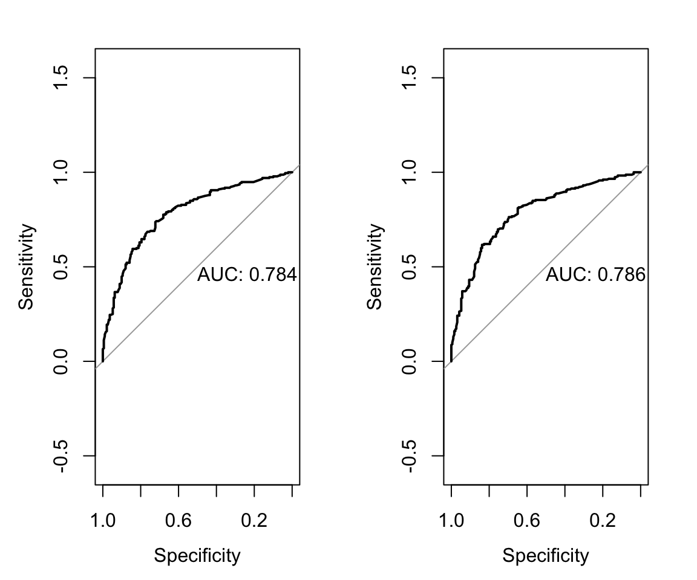

library(tidyverse)
library(HDSinRdata)
library(gt)
library(gtsummary)
library(glmnet)
library(pROC)16 Case Study: Regression
For this chapter, we use the tb_diagnosis dataset seen in Chapter 6 from the HDSinRdata package. These data contains information on 1,762 patients in rural South Africa and urban Uganda who presented at a health clinic with tuberculosis-related symptoms and who were tested for tuberculosis (TB) using Xpert MTB/RIF (Baik et al. 2020). Our goal is to conduct a similar regression analysis to Baik et al. (2020) and use these data to derive a risk model for screening patients for treatment while awaiting Xpert results. Unlike Baik et al. (2020), we do not restrict our analysis to simple integer risk score models.
Similar to Baik et al. (2020), we use the data from rural South Africa to derive our risk model and use the data from urban Uganda as a withheld validation set. Further, we divide the data from South Africa into a training and test set using a 70/30 split.
# data from package
data(tb_diagnosis)
# training data
tb_southafrica <- tb_diagnosis %>%
filter(country == "South Africa") %>%
select(-country) %>%
na.omit()
# validation data
tb_uganda <- tb_diagnosis %>%
filter(country == "Uganda") %>%
select(-country) %>%
na.omit()
# train/test split
train_index <- sample(1:nrow(tb_southafrica),
0.70*nrow(tb_southafrica),
replace = FALSE)
tb_train <- tb_southafrica[train_index,]
tb_test <- tb_southafrica[-train_index,]The following table shows our data stratified by TB diagnosis. We observe that our data are well balanced between the two groups and that we see key differences in the distributions of our observed clinical and demographic variables. For example, those whose blood results confirmed TB generally had more observed symptoms and were more likely to have had symptoms for over two weeks.
tbl_summary(tb_southafrica, by = c(tb),
label = list(age_group ~ "Age",
hiv_pos ~ "HIV Positive",
diabetes ~ "Diabetes",
ever_smoke ~ "Ever Smoked",
past_tb ~ "Past TB Diagnosis",
male ~ "Male",
hs_less ~ "< HS Education",
two_weeks_symp ~ "Symptoms for Two Weeks",
num_symptoms ~ "Number of TB Symptoms")) %>%
modify_spanning_header(c("stat_1", "stat_2") ~
"**TB Diagnosis**") %>%
as_gt()| Characteristic | TB Diagnosis | |
|---|---|---|
| 0, N = 7051 | 1, N = 7021 | |
| Age | ||
| [55,99) | 170 (24%) | 102 (15%) |
| [15,25) | 121 (17%) | 85 (12%) |
| [25,35) | 120 (17%) | 166 (24%) |
| [35,45) | 136 (19%) | 202 (29%) |
| [45,55) | 158 (22%) | 147 (21%) |
| HIV Positive | ||
| 0 | 519 (74%) | 331 (47%) |
| 1 | 186 (26%) | 371 (53%) |
| Diabetes | ||
| 0 | 683 (97%) | 677 (96%) |
| 1 | 22 (3.1%) | 25 (3.6%) |
| Ever Smoked | ||
| 0 | 492 (70%) | 419 (60%) |
| 1 | 213 (30%) | 283 (40%) |
| Past TB Diagnosis | ||
| 0 | 613 (87%) | 574 (82%) |
| 1 | 92 (13%) | 128 (18%) |
| Male | ||
| 0 | 395 (56%) | 275 (39%) |
| 1 | 310 (44%) | 427 (61%) |
| < HS Education | ||
| 0 | 73 (10%) | 46 (6.6%) |
| 1 | 632 (90%) | 656 (93%) |
| Symptoms for Two Weeks | ||
| 0 | 258 (37%) | 106 (15%) |
| 1 | 447 (63%) | 596 (85%) |
| Number of TB Symptoms | ||
| 1 | 427 (61%) | 174 (25%) |
| 2 | 181 (26%) | 163 (23%) |
| 3 | 67 (9.5%) | 199 (28%) |
| 4 | 30 (4.3%) | 166 (24%) |
| 1 n (%) | ||
16.1 Model Selection
Our goal is to predict TB diagnosis. We compare two risk models: a logistic regression model and a lasso logistic regression model. For both of these models, we fit our model on the training data. For the lasso model, we use 5-fold cross-validation to choose the penalty parameter. In the following code, we create a table with the estimated exponentiated coefficients.
# fit logistic model
mod_logistic <- glm(tb ~ ., data = tb_train, family = binomial)
# fit lasso model with CV
X_train <- model.matrix(tb~., data = tb_train)[, -1]
y_train <- tb_train[,1]
mod_lasso_cv <- cv.glmnet(X_train, y_train, alpha = 1,
family = "binomial", nfolds = 5)
# refit for given lambda
mod_lasso <- glmnet(X_train, y_train, alpha = 1, family = "binomial",
lambda = mod_lasso_cv$lambda.min)
# create data frame
coef_df <- data.frame(Logistic = signif(exp(coef(mod_logistic)), 3),
Lasso =
signif(exp(as.numeric(coef(mod_lasso))), 3))
coef_df
#> Logistic Lasso
#> (Intercept) 0.0531 0.0823
#> age_group[15,25) 1.5000 1.2000
#> age_group[25,35) 2.0400 1.6400
#> age_group[35,45) 2.0700 1.6900
#> age_group[45,55) 1.1200 1.0000
#> hiv_pos1 2.6300 2.5000
#> diabetes1 1.4500 1.1600
#> ever_smoke1 0.8770 1.0000
#> past_tb1 1.0500 1.0000
#> male1 2.5100 2.1700
#> hs_less1 1.2500 1.1100
#> two_weeks_symp1 2.5000 2.3300
#> num_symptoms2 2.1100 1.9200
#> num_symptoms3 6.6500 5.8800
#> num_symptoms4 11.9000 10.0000After fitting both models, we evaluate model performance on the withheld test set using an ROC curve. The ROC curve shows similar discrimination for both models. Therefore, we choose the lasso model for its potential sparsity and parsimony.
par(mfrow = c(1,2))
# logistic regression model ROC
pred_test_logistic <- predict(mod_logistic, tb_test,
type = "response")
roc_test_logistic <- roc(predictor = pred_test_logistic,
response = tb_test$tb,
levels = c(0,1), direction = "<")
plot(roc_test_logistic, print.auc = TRUE)
# lasso model ROC
X_test <- model.matrix(tb~., data = tb_test)[,-1]
pred_test_lasso <- as.numeric(predict(mod_lasso, newx = X_test,
type = "response"))
roc_test_lasso <- roc(predictor = pred_test_lasso,
response = tb_test$tb,
levels = c(0,1), direction = "<")
plot(roc_test_lasso, print.auc = TRUE)
We refit the lasso model on the full data from South Africa and present the updated model in the subsequent code chunk.
# fit lasso model with CV
X_train_full <- model.matrix(tb~., data = tb_southafrica)[, -1]
y_train_full <- tb_southafrica[,1]
mod_cv_full <- cv.glmnet(X_train_full, y_train_full, alpha = 1,
family = "binomial", nfolds = 5)
# refit for given lambda
mod_full <- glmnet(X_train_full, y_train_full, alpha = 1,
family = "binomial",
lambda = mod_cv_full$lambda.min)
# create data frame
coef_df <- data.frame(
Variable = c("Intercept", colnames(X_train_full)),
Lasso = signif(exp(as.numeric(coef(mod_full))), 3))
coef_df
#> Variable Lasso
#> 1 Intercept 0.0541
#> 2 age_group[15,25) 1.3400
#> 3 age_group[25,35) 2.5600
#> 4 age_group[35,45) 1.8100
#> 5 age_group[45,55) 1.2300
#> 6 hiv_pos1 2.5900
#> 7 diabetes1 1.9400
#> 8 ever_smoke1 0.7730
#> 9 past_tb1 1.2200
#> 10 male1 2.5000
#> 11 hs_less1 1.2500
#> 12 two_weeks_symp1 2.5200
#> 13 num_symptoms2 1.8700
#> 14 num_symptoms3 5.9400
#> 15 num_symptoms4 10.300016.2 Evaluate Model on Validation Data
We then evaluate the lasso model on the withheld validation data. These data comes from clinics in urban Uganda and contains only 387 observations. The generated table shows that this population differs from our training population including having a lower proportion of patients diagnosed with TB.
tbl_summary(tb_diagnosis, by = c(country),
label = list(tb ~ "TB Diagnosis",
age_group ~ "Age",
hiv_pos ~ "HIV Positive",
diabetes ~ "Diabetes",
ever_smoke ~ "Ever Smoked",
past_tb ~ "Past TB Diagnosis",
male ~ "Male",
hs_less ~ "< HS Education",
two_weeks_symp ~ "Symptoms for Two Weeks",
num_symptoms ~ "Number of TB Symptoms")) %>%
modify_spanning_header(c("stat_1", "stat_2") ~ "**Country**") %>%
as_gt()| Characteristic | Country | |
|---|---|---|
| South Africa, N = 1,4071 | Uganda, N = 3871 | |
| TB Diagnosis | ||
| 0 | 705 (50%) | 281 (73%) |
| 1 | 702 (50%) | 106 (27%) |
| Age | ||
| [55,99) | 272 (19%) | 20 (5.2%) |
| [15,25) | 206 (15%) | 86 (22%) |
| [25,35) | 286 (20%) | 129 (33%) |
| [35,45) | 338 (24%) | 99 (26%) |
| [45,55) | 305 (22%) | 53 (14%) |
| HIV Positive | ||
| 0 | 850 (60%) | 256 (66%) |
| 1 | 557 (40%) | 131 (34%) |
| Diabetes | ||
| 0 | 1,360 (97%) | 383 (99%) |
| 1 | 47 (3.3%) | 4 (1.0%) |
| Ever Smoked | ||
| 0 | 911 (65%) | 328 (85%) |
| 1 | 496 (35%) | 59 (15%) |
| Past TB Diagnosis | ||
| 0 | 1,187 (84%) | 331 (86%) |
| 1 | 220 (16%) | 56 (14%) |
| Male | ||
| 0 | 670 (48%) | 199 (51%) |
| 1 | 737 (52%) | 188 (49%) |
| < HS Education | ||
| 0 | 119 (8.5%) | 30 (7.8%) |
| 1 | 1,288 (92%) | 357 (92%) |
| Symptoms for Two Weeks | ||
| 0 | 364 (26%) | 63 (16%) |
| 1 | 1,043 (74%) | 324 (84%) |
| Number of TB Symptoms | ||
| 1 | 601 (43%) | 156 (40%) |
| 2 | 344 (24%) | 128 (33%) |
| 3 | 266 (19%) | 68 (18%) |
| 4 | 196 (14%) | 35 (9.0%) |
| 1 n (%) | ||
The ROC curve shows that the AUC on the validation data is lower than on the training data but still maintains meaningful discrimination.
# lasso validation roc
X_val <- model.matrix(tb~., data = tb_uganda)[, -1]
pred_val <- as.numeric(predict(mod_full, newx = X_val,
type = "response"))
roc_val_lasso <- roc(predictor = pred_val,
response = tb_uganda$tb,
levels = c(0,1), direction = "<")
plot(roc_val_lasso, print.auc = TRUE)